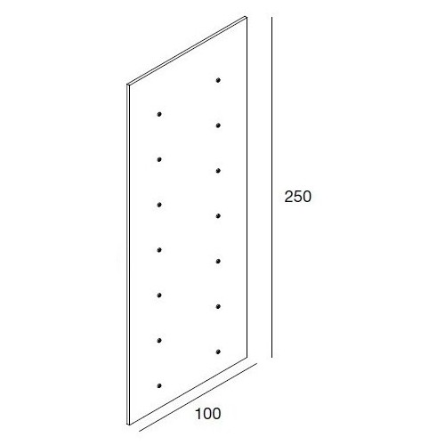

Par la fenêtre
Le temps passe et rien ne se passe Il doit être minuit, peut être plus tard, je ne sais pas, je n’ai pas la notion du temps. La lueur de la bougie tient, mais pour combien de temps ? Elle diminue à vue d’oeil, je vais bientôt me retrouver dans le noir… Pourquoi cette boîte ne contient-elle qu’une seule bougie si elle tiennent si peu longtemps ? Le bruit de ma respiration est seul à briser le silence.

Y a-t-il de la lumière dehors ? Peut-être. Tout est fermé dans ce logement, je vis au rythme de l’horloge d’Omnia depuis ma naissance. Les panneaux muraux doivent se démonter pour permettre d’évacuer en cas d’incident, il y a une notice.
“Décrocher le panneau d’isolation sonore”
Je m’exécute, un large tissu sombre couvre la surface derrière le panneau.

“Arracher le tissu opaque”
Hum… ça va me coûter combien à faire réparer après ? De toute façon Omnia ne va pas se relancer si personne ne sort ou ne bouge ! Je saisis le tissu et tire un coup sec dessus… Pas de lumière comme je l'espèrais…
Mais quelque chose de bien plus merveilleux… La voûte étoilé au-dessus du monde. Je connaissais les photos, mais jamais je ne l’avais vu avec des couleurs si éclatantes… Violet, bleu, or, argent… La Voie Lactée s’est paré de ses plus beaux bijoux...
La lune nous regarde. Grand disque brillant silencieux, elle vient éclairer la nuit.
Je saisis la poignée de la fenêtre, sans détacher mon regard de cette oeuvre d’art, je la tourne doucement, je sens la fenêtre s’ouvrir. L’air frai vient courir sur ma main me faisant frissonner. Omnia maintient la température des logements à 22 degrés et dispose de système de ventilation qui fonctionnent en permanence.
J’ouvre la fenêtre. Le vent s’engouffre dans toute la pièce et vient souffler la flamme de la bougie
Il transporte une légère odeur, une odeur agréable… Comme les parfum d’ambiance aux fleures… C’est donc ça le parfum des vraies fleurs ? Omnia laisse une grande place au développement de la nature dehors, les fleurs semblent pousser en quantités même dans la ville.
.gif)
Ramené à la réalité par des voix, je baisse les yeux. Mes voisins eux aussi ont ouvert les fenêtres. Tous sont ébahis devant un tel spectacle ,certain sont encore éclairé par leur bougies, d’autre n’en ont plus ou ne l’ont peut être pas allumée. Je ne les avais jamais vus. Des hommes, des femmes, des enfants, de tous âges. Je ne pensais jamais qu’ils vivaient seulement à quelques mètres de moi. Ils n’y pensaient surement jamais non plus.
Chacun chez soi, devant son écran.